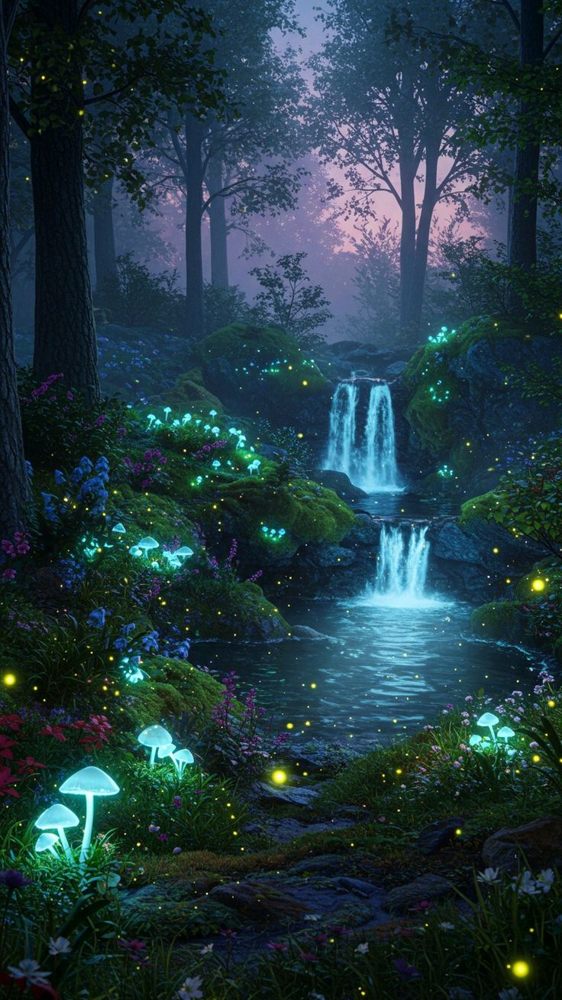

Река Ирта. Нижняя
Добро пожаловать на нижнюю реку Ирту!
Ирта — странная, почти потусторонняя река, которая несёт в себе дыхание спор, грибных ароматов и вязкой таинственной магии. Она начинается в холодных водах Пустого залива и, извиваясь сквозь земли Средиземного Края и Края Грёз, устремляется к Изумрудному заливу, но её путь прерывает озеро Ират — глубокое и таинственное, которое и разделяет реку на верхнюю и нижнюю.
Наследие Края Грёз

Берега нижней Ирты невозможно спутать с какой-либо другой рекой мира. Здесь растёт бесчисленное множество грибов — от крошечных, с шляпками цвета лунного света, до исполинов, чьи шляпы похожи на зонты, под которыми могли бы укрыться целые семьи. Грибы растут не только на суше, но и в самой воде: их бледные нити и сочные плодовые тела колышутся на течении как медленные, живые кораллы. Часть этих грибов магическая — они сияют, испускают слабое тепло или пульсируют светом, реагируя на присутствие живых существ. Обычные же грибы, оказавшись в этой среде, как правило, быстро мутируют под влиянием спор, обретая странные формы и свойства. Вода нижней Ирты удивительно чиста, хотя внешний вид реки, с её затенёнными, влажными берегами и клубящимися в воздухе спорами, мог бы намекать на обратное. Это чистота особого рода — грибная. Мицелий и шляпочные гиганты действуют как естественные фильтры, убирая из воды лишнее и придавая ей мягкий, почти сладковатый вкус. К моменту, когда река доходит до берёзовой рощи Белой, вода становится пресной, словно родниковая.
Обитатели и особенности
Рыбы в Ирте не слишком много — её место заняли иные обитатели: причудливые головоногие, похожие на ожившие кошмары, мягкотелые с множеством глаз, ползучие и скользкие создания, которых, кажется, родил Нижний Мир. Среди них встречаются полуразумные виды, способные к примитивной речи или телепатии. Русалок здесь почти нет — возможно, из-за спор и глубинных чудовищ. Волшебники утверждают, что река Ирта — одно из немногих мест, где можно напрямую усилить магию разума. Медитация на её берегах или даже в лодке посреди течения способна расширить восприятие, сделать мысли яснее, а споры и некоторые редкие грибы готовы послужить катализатором заклинаний и видений. Особенно ценят это место эльфы, чья магия легко переплетается с ритмом Ирты.
Озеро Ират
Озеро Ират — сердце нижней Ирты. Его глубина неизвестна: даже самые искусные ныряльщики и маги глубин возвращались с признанием, что дно теряется во мраке. В центре озера, как страж, стоит огромный камень, чёрный и гладкий, срезанный, будто рукой великана. Легенда гласит, что его оставил сам Создатель в те времена, когда мир ещё был юн. Под камнем, по слухам, прячутся древние чудовища, а кто-то даже говорит, что с помощью него можно попасть в недра Подземного Мира.
Ещё из интересного...
Западный берег реки хранит маленький секрет — возле Великого Лифта Эон, под тенью гигантских шляп, притаилось небольшое болотце. Оно кажется безобидным, но те, кто рискнул углубиться в его жижу, рассказывали о странных пузырях, поднимающихся со дна.